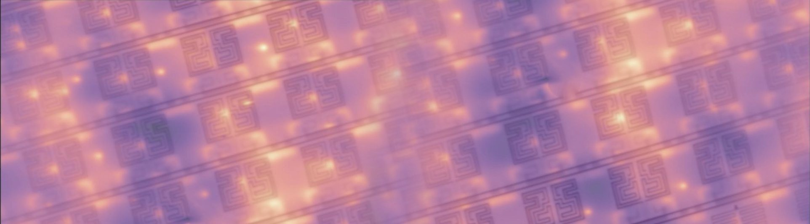
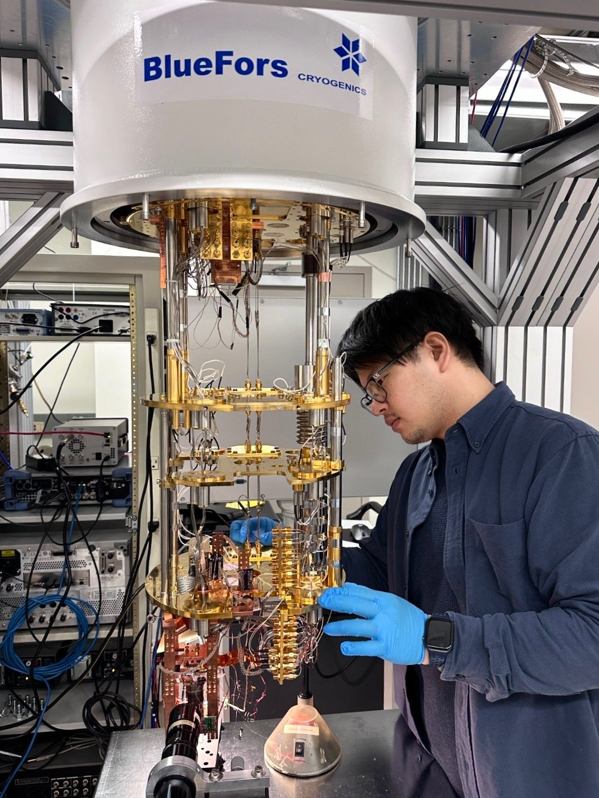
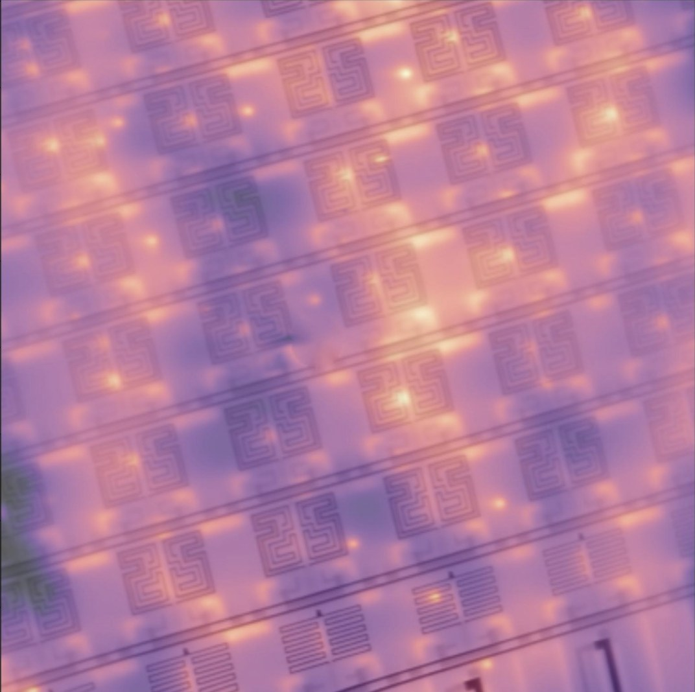
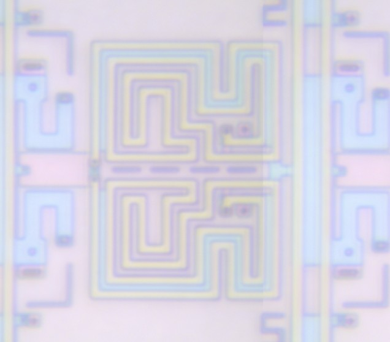
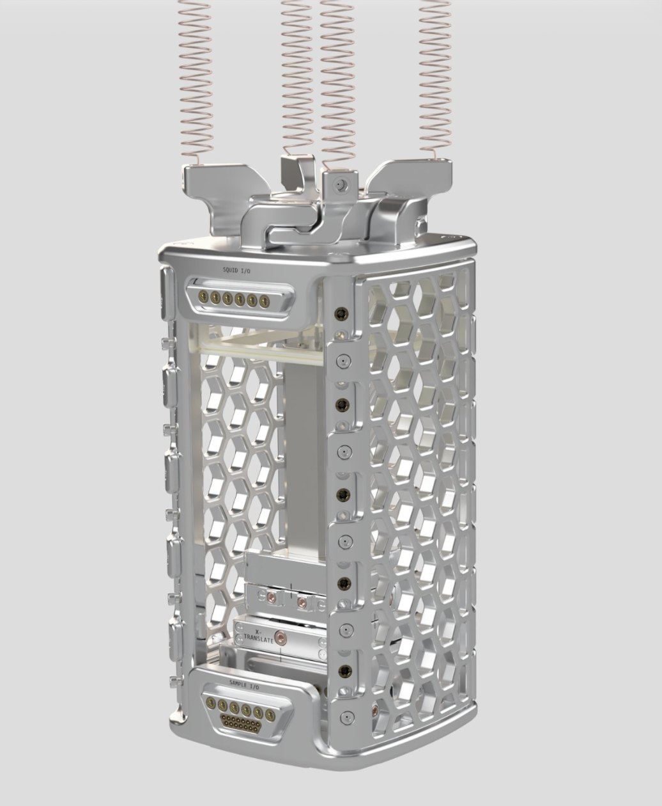

Scanning SQUID Microscopy
Scanning superconducting quantum interference device (SQUID) microscopy probes local magnetic fields and susceptibility with micron-scale spatial resolution. In collaboration with the Bøttcher and Moler groups, the Irwin group investigates superconducting devices and develops scanning techniques for studying quantum coherent systems.
A central question is how to increase magnetic sensitivity without disturbing the sample. Conventional DC SQUIDs operate at finite voltage, generating dissipation and Josephson radiation that can perturb the systems under investigation. We are exploring radio-frequency (RF) SQUIDs that measure flux through shifts in a microwave resonance while operating in the zero-voltage state. These devices have resonances tunable over approximately 3–12 GHz and use Josephson three-wave mixing to provide 10–20 dB of parametric gain. Operation at bias points with suppressed Kerr nonlinearity eliminates unwanted resonance shifts, while amplification within the sensor reduces the contribution of downstream readout noise. This approach offers a route to near-quantum-limited magnetic measurements of Andreev spin qubits, collective excitations, and fluctuations near the Berezinskii–Kosterlitz–Thouless transition.
We also use DC scanning SQUID microscopy to study flux trapping in Adiabatic Quantum Flux Parametron (AQFP) logic circuits. By imaging devices after repeated cooling cycles in controlled magnetic fields, we examine how the geometry and placement of patterned “moats” determine whether flux is captured away from Josephson junctions. These measurements guide circuit designs that reduce unwanted flux trapping.
Alongside this work, we are developing a scanning cage to reduce mechanical motion, improve sensor–sample alignment and magnetic field control, and accommodate both DC and RF measurements.



